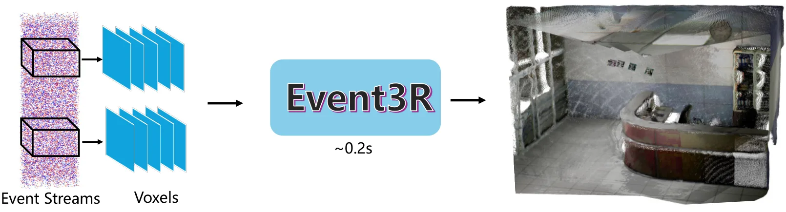
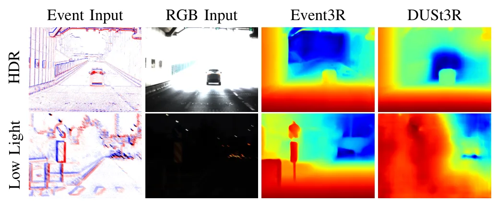
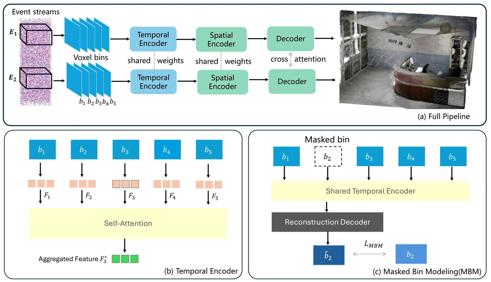
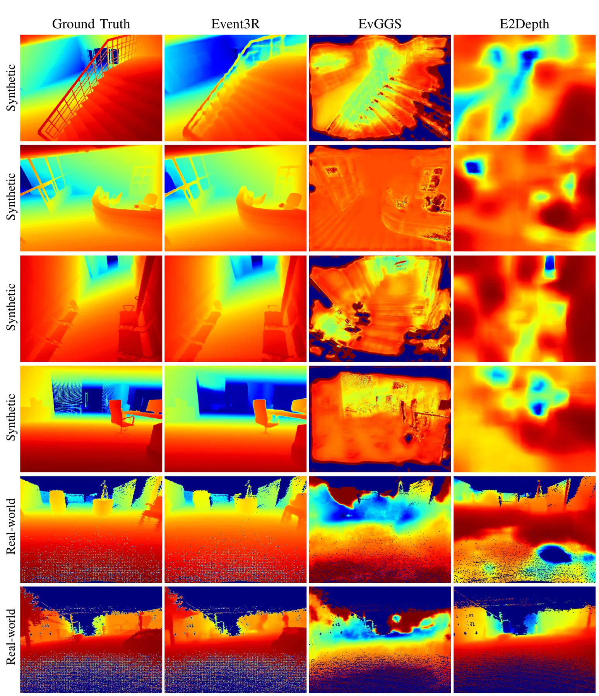
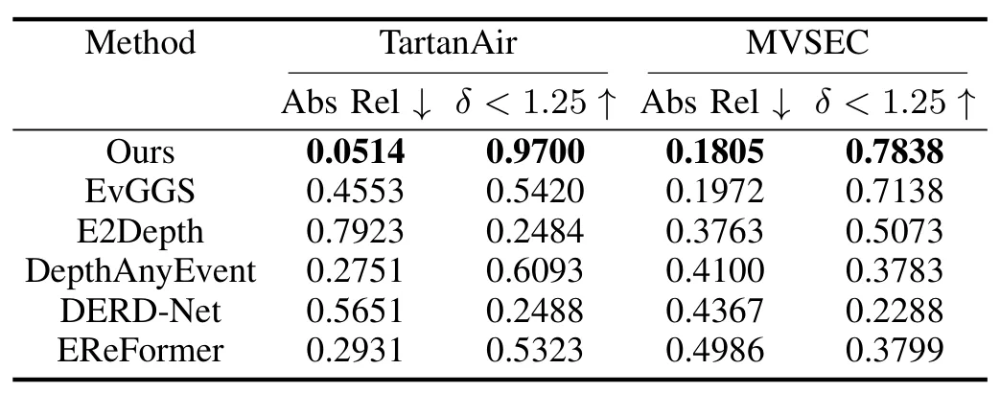
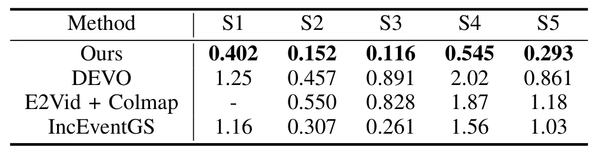
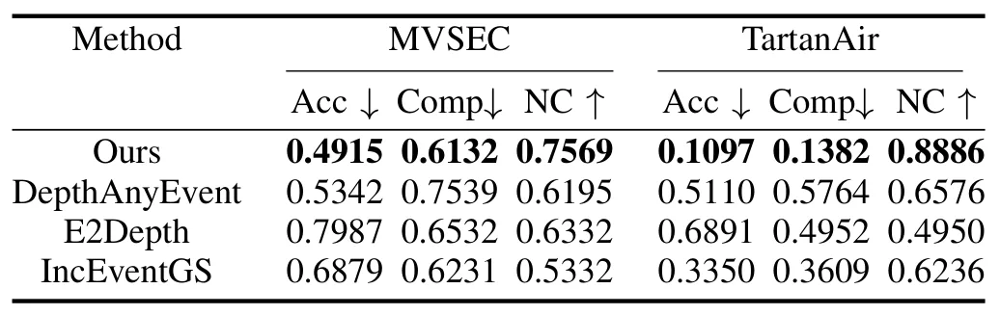
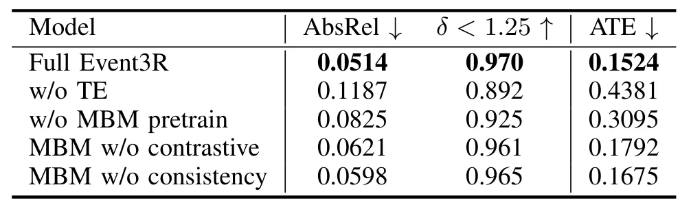

Event3R：通过时空特征聚合从事件相机实现异步到全局三维重建Event3R: Asynchronous-to-Global 3D Reconstruction from Event Camera via Spatial-Temporal Feature Aggregation
事件相机与全局点云重建对高速和高动态机器人场景价值较高，且已获 IROS 2026 接收；需核查相机位姿是否联合估计、尺度来源和真实数据定量精度。
一句话工作总结
结合事件体素、时间注意力和自监督掩码建模，直接输出全局对齐的事件相机三维点云。
摘要
Event3R 是把异步事件流直接映射为全局一致三维点云的前馈框架。系统把事件组织为时空体素，以时间注意力聚合动态特征；通过 Masked Bin Modeling 自监督预训练减少对大规模标注的依赖，并在微调时加入对比对齐和一致性正则，以强化跨视图结构对应与时间一致性。合成和真实基准实验显示，其重建的鲁棒性、时间一致性和全局对齐优于已有事件方法。
Robust 3D reconstruction is essential for robotics and embodied perception. Recent feed-forward approaches such as DUSt3R have demonstrated impressive progress in dense 3D reconstruction from RGB images, achieving global geometric consistency and strong generalization. However, extending such dense 3D reconstruction to event cameras remains challenging due to their asynchronous, sparse, and highly dynamic nature, as well as the lack of large-scale, well-labeled datasets. In this work, we introduce Event3R, a feed-forward framework that directly maps asynchronous event streams to globally consistent 3D point clouds. Event3R represents incoming events as spatial-temporal voxels, enabling time-aware feature integration through a temporal attention module that enhances the module's temporal feature learning. To further strengthen temporal representation learning and reduce reliance on labeled data, we propose a Masked Bin Modeling (MBM) strategy for self-supervised pre-training, enabling robust temporal representation learning with minimal labeled data, and retain it as an auxiliary fine-tuning objective. In addition, contrastive alignment and consistency regularization losses are incorporated during fine-tuning to reinforce structural correspondence and temporal coherence across views. Extensive experiments on both synthetic and real-world benchmarks demonstrate that Event3R achieves robust, temporally consistent, and globally aligned 3D reconstructions, significantly outperforming existing event-based methods.
中文解读摘录
- 链接：arXiv 2607.15727
- 核心贡献：将事件组织为时空体素，通过时间注意力、Masked Bin Modeling 自监督预训练、对比对齐和一致性正则直接输出全局一致点云。
- 为什么重要：适合高速运动、HDR 与常规帧相机易模糊的机器人场景，并已获 IROS 2026 接收。
- 待核查：摘要未明确相机位姿是否联合预测、全局尺度如何确定，以及真实数据上的绝对几何精度。
图表/页面预览
{kind=link}

{kind=link}

{kind=link}

{kind=link}

{kind=link}

{kind=link}

{kind=link}

{kind=link}
